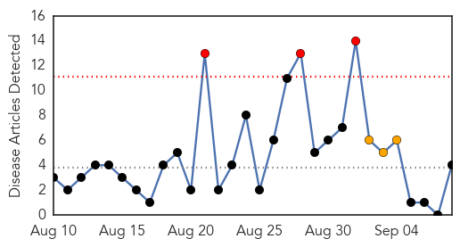
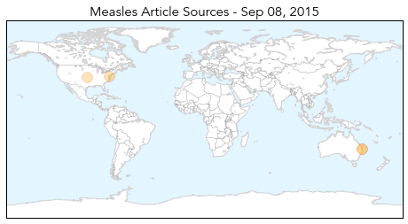
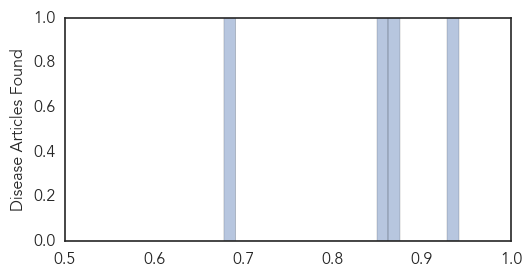
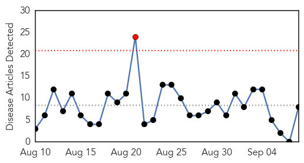
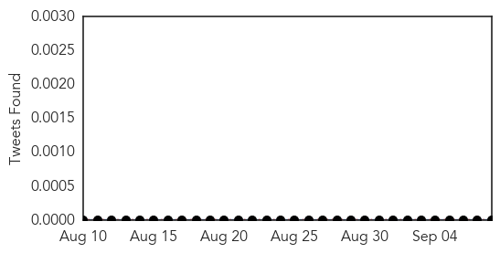
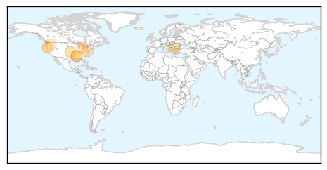
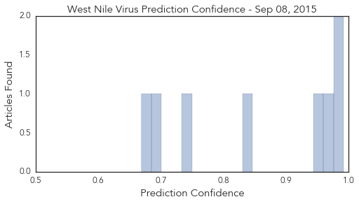

Measles
30-Day Web Trend
3 alerts, 3 warnings

30-Day Twitter Trend
0 alerts, 0 warnings

Article Locations
Article Confidences
Top Articles:
Top Tweets:
-
No tweets found for Sep 08, 2015
West Nile Virus
30-Day Web Trend
1 alerts, 0 warnings

30-Day Twitter Trend
1 alerts, 0 warnings

Article Locations
Article Confidences
Top Articles:
- 0.992
- Identity of North Carolina West Nile victim released
- 0.987
- Blood donor tests positive for West Nile Virus
- 0.963
- West Nile still posing threat
- 0.947
- Four new cases of West Nile virus in Mississippi bring total to 22
- 0.842
- Mosquito traps test positive for West Nile Virus in Nordonia Hills communities - News Leader
- 0.742
- 36. Charting the Course of a Globe-Trotting Pathogen
- 0.699
- Mississippi reaches 22 case of West Nile virus this year
- 0.669
- In Washington, West Nile virus makes a comeback
Top Tweets:
-
No tweets found for Sep 08, 2015